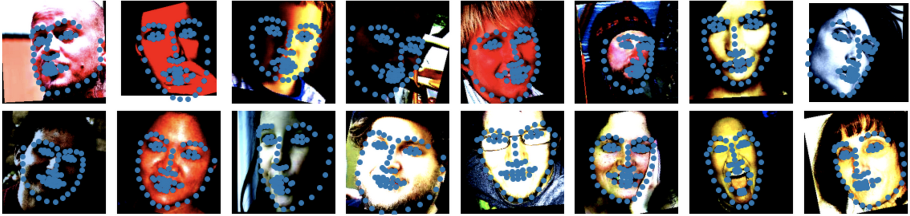

CS194-26 Project 5
Keypoint Detection with Neural Networks
Norman Karr | nkarr11@berkeley.edu
Table of Contents
1. Dataset
2. Model and Training
3. Results
4. Varying Hyper Parameters
1. Data Transformations
2. Model and Training
3. Results
4. Kernel Visualization
1. Dataset and Preprocessing
2. Model and Training
3. Results
4. Fun Experiments

Bells and Whistles
1. Kaggle Contest
2. Face Morphing (Revisited)
Single Point Detection
The initial task is to detect just a single key point, the tip of a person's nose. The steps I will take to do this are to first collect a dataset of faces with an annotated nose key point. Then I will train a simple network to predict the x and y coordinate of the key point.
1. Dataset
The dataset I will be using is the IMM Face Database with has 240 images of faces with 58 annotated keypoints each. However, for this part, we will only concern ourselves with the nose tip key point. For splits, I went with a 80-20 split for training vs validation data thus I train on 192 images and validate on 48 images.
For preprocessing, I first resize the images from their original size of (480, 640) to a smaller size of (60, 80). Each image is also grayscaled and then normalized to have pixel values in the range of (-0.5, 0.5). I also recalculate the labels to be relative coordinates (i.e. the keypoint (x, y) would be represented as a ratio of the image width and height). This way, the label values range from 0-1 which helps improve training by bounding the loss.
Pictured above is a variety of example data images and their corresponding nose tip key points
2. Model and Training
Since the images are relatively small and we are only predicting a singular point, it is sufficient to train a relatively small convolutional neural network. Pictured below is the model architecture and hyperparameters used.
Model Architecture
Layer 1: 1x16x3x3 Conv -> 2x2 MaxPool -> ReLU
Layer 2: 1x32x3x3 Conv -> 2x2 MaxPool -> ReLU
Layer 3: 32x32x3x3 Conv -> 2x2 MaxPool -> ReLU
Layer 4: 32x32x3x3 Conv -> 2x2 MaxPool -> ReLU
Layer 5: 96x64 Linear -> ReLU
Layer 6: 64x2 Linear
Training Parameters
Input Image Size: 60x80
Optimizer: Adam
Loss Function: MSE
Learning Rate: 1e-3
Batch Size: 4
Number of Epochs: 15
3. Results
Pictured above are the results of my neural network. The blue dot is the true label and the orange dot is the prediction. The top row of images are images from training and the bottom row are images from the validation set.
Training History
Pictured on the left is the loss history of the model while training. Since validation loss is normally just slightly higher than training loss, this means our model is not overfitting and is generalizing well.
**Note that training error is calculated as a running error while training which is was causes the initial spike**
Two Successes
Pictured above were two apparent succcesses. One theory I have for why these succeeded is due to the clear one-sided lighting. This lighting makes it easy to find the midway point of the face and then model just has to find the point along the vertical.
Two Failures
Pictured above were two apparent failures. I believe these failed because they did not have a clear one-sided lighting like the two successes. This extra complexity likely is what makes it difficult for our small model to make predictions as accurately.
4. Varying Hyperparameters
The first variable I varied was the learning rate. Pictured below are the different training curves of each run. 1e-3 converged the fastest; 1e-4 was able to converge slightly slower than 1e-3; 1e-5 trained much slower but eventually still converged.
The second variable I varied was number of channels per layer. Overall, it seemed that more channels trained faster. This is counter-intuitive for me because I would have thought that more parameters would take longer to train.
Multi-Point Regression
The dataset we are using has 58 annotated keypoints, so let's see if we can predict all 58 points. To do this, we not only need a larger model, but we are going to need a larger dataset; 192 images is not enough to properly fit 58 points. Thus we are going introduce data augmentations to pseudo-increase the size of our dataset.
1. Data Augmentations
The general idea of data augmentatin is simple: randomly augment our data as it is being loaded into the training loop. This will make it so that we rarely train on exactly the same image and will help us generalize. The data augmentations I chose to use were random color jitters and random rotations and translations.
Pictured below are examples of random transformations applied to a single image.
2. Model and Training
For this part, I tried two different models: a medium sized model and a large model. Additionally, I introduced a dropout layer after each convolution to help prevent overfitting.
Medium Model Architecture
Layer 1: 1x64x5x5 Conv -> 2x2 MaxPool -> ReLU -> Dropout
Layer 2: 64x64x3x3 Conv -> 2x2 MaxPool -> ReLU -> Dropout
Layer 3: 64x32x3x3 Conv -> 2x2 MaxPool -> ReLU -> Dropout
Layer 4: 32x32x3x3 Conv -> 2x2 MaxPool -> ReLU -> Dropout
Layer 5: 32x32x3x3 Conv -> 2x2 MaxPool -> ReLU -> Dropout
Layer 6: 1280x512 Linear -> ReLU
Layer 7: 512x116 Linear
Medium Model Training Parameters
Input Image Size: 240x320
Optimizer: Adam
Loss Function: MSE
Learning Rate: 1e-3
Batch Size: 2
Number of Epochs: 20
Dropout Probability: 0.2
Large Model Architecture
Layer 1: 1x128x5x5 Conv -> 2x2 MaxPool -> ReLU -> Dropout
Layer 2: 128x128x3x3 Conv -> 2x2 MaxPool -> ReLU -> Dropout
Layer 3: 128x64x3x3 Conv -> 2x2 MaxPool -> ReLU -> Dropout
Layer 4: 64x64x3x3 Conv -> 2x2 MaxPool -> ReLU -> Dropout
Layer 5: 64x32x3x3 Conv -> 2x2 MaxPool -> ReLU -> Dropout
Layer 6: 1280x512 Linear -> ReLU
Layer 7: 512x116 Linear
Medium Model Training Parameters
Input Image Size: 240x320
Optimizer: Adam
Loss Function: MSE
Learning Rate: 1e-3
Batch Size: 4
Number of Epochs: 35
Dropout Probability: 0.2
3. Results
Results of the medium neural network on the training data.

Results of the large neural network on the training data.
Results of the medium neural network on the validation data.
Results of the large neural network on the validation data.

Training history of medium neural network
Results of the large neural network on the validation data.
Two Successes
Pictured above were two apparent succcesses. These likely succeeded because their face shape is pretty average and the image is straight on. Additionally, there is little augmentation in the two images.
Two Failures
Pictured above were two apparent failures. The first failure was likely because of the turned head however the model was still able learn a shape that looks almost like a turned head. My theory for the second failure is that it is an extreme rotation (i.e. the rotation is the farthest rotation possibly in my code thus has little training data for it).
4. Kernel Visualization
Learned kernels from the medium network's first layer
Learned Kernels from the large network's first layer
One obversations I had about these kernels, particularly in the larger model's learned kernels, is that a few of the kernels very clearly do actually look like edge detectors.
Training on Large Dataset
1. Dataset and Preprocessing
With working experience of models, we now want to see if we can train on a truly larger dataset. The dataset I will be using is Zhe Cao's ibug_300W_large_face_landmark_dataset. This dataset contains 6666 images of faces with 68 annotated keypoints. Additionally, there is a final test set with 1007 images. Given the 6666 images, I opted for a 85-15 split of training to validation images.
In many of the images, the actual faces only take up a small portion of the image. As a result, I cropped the images such that the face made up the majority of the frame. For this section, I also opted to train my models using colored images instead of grayscale images. For transformations, I once again applied color jitters, and random affine transformations. Finally, since I plan to use a pre-trained ResNet18 model, I normalize each image with the same means and standard deviations used in the ResNet paper as well as resized to be 224x224 pixels.

Pictured above are example training images after cropping and transformations.
**Note that colors are strange because of colorjitter and normalization transformations**
2. Model and Training
I opted to implement transfer learning and train off of a pretrained ResNet18. After some experiments, I found that a learning rate of 1e-3 would often converge after 25-30 epochs thus I decided to add a learning rate scheduler that multiplied the learning rate by 0.1 after 30 epochs to get a little more fine-tuned accuracy.
Model Architecture
Pretrained ResNet18 with fully connnected layer replaced with a fully connected layer with 136 output nodes.
Training Parameters
Input Image Size: 224x224
Optimizer: Adam
Loss Function: MSE
Learning Rate: 1e-3
LR Scheduler: gamma 0.1; step size 30
Batch Size: 32
Number of Epochs: 35
Training History
Pictured on the left is the loss history of the model while training. First observation is that validation data follows training data well meaning we are generalizing well. Additionally, we can clearly see that the learning rate scheduler (which took a step on epoch 30) helped the model achieve a little more improvement in the loss.
3. Results
Example Training Data Results
(Orange = Predictions)
Example Validation Data Results
(Orange = Predictions)
Test Data Results
(Blue = Predictions)
Pictured above are the results of the trained model. Training data and validation data are both very accurate. Most surprisingly is how well it does on test data. The test data does well despite the wide variety of face sizes. I personally would think that all the rescaling would lose some detail in facial structure but the model still appears robust to it.
**Note that test data augmentations only involved color normalization and no image transformations**
4. Fun Experiments
Given a working model, I wanted to test my model on some of my own photos. In particular, I wanted to experiment on out-of-distribution photos. The four photos I decided to test was an image of a gorilla's face, a person's face with a mask, a person's face obscured by hair, and a simple baseline person. Pictured below are the results.
Evidently the gorilla image failed. Interestingly, the image with the face mask is able to find the correct shape of the face but is clearly lost on the fine details such as a nose and mouth. For the image obscured by hair, the model also struggles to find the eyes. Both of these observations are actually good because they suggest that the network actually learns the features corresponding to each keypoint.
Bells and Whistles
Kaggle Contest
Our class held a kaggle contest on the test set data where the metric was mean-absolute-error of predicted key points. I ranked 3 out of 153 with my model recieving a mean-absolute-error of 5.83 pixels.
Link to Kaggle: https://www.kaggle.com/c/cs194-26-fall-2021-project-5/leaderboard
Face Morphing (Revisited)
With an automatic facial keypoint detector, we now have a method to automate face morphing entirely. It is a faily simple process as well: use the neural network model to detect the keypoints and then pass these points into our face morphing algorithm. Pictured below is a face morph done between my housemates and our significant others produced without manually selecting any keypoints.